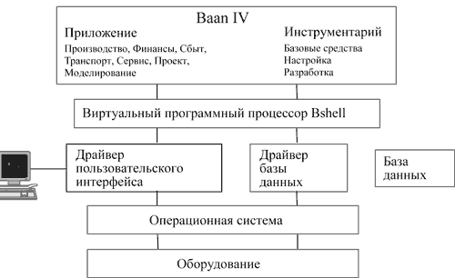

По материалам компании "Альфа-Интегратор - Баан Евразия"
Компания Baan (http://www.baan.com, http://www.baan.ru), сегодня входящая в подразделение Software Systems британской группы Invensys (http://www.invensys.com), была основана Яном Бааном в 1978 г. как консалтинговая фирма по обслуживанию финансовых и административных проектов. В 1990 г. Baan Company была преобразована в транснациональную корпорацию со штаб-квартирами в Нидерландах и США.
В начале 80-х гг. компания создавала собственные программные продукты на платформе UNIX. В 1987 г. на рынок вышел комплексный пакет Triton - первая интегрированная система управления предприятием (ERP), разработанная в среде UNIX. В 1996 году ей на смену пришла корпоративная информационная система Baan IV.
Система Baan предназначена для комплексной поддержки бизнеса. Это настраиваемая система, все подсистемы которой конфигурируются под процедуры и задачи бизнеса заказчика. В нее входят подсистемы, решающие перечисленные ниже задачи.
Поддержка управления проектами - комплексная поддержка процессов планирования, управления и контроля выполнения разнообразных программ в рамках всей компании; комбинированный учет затрат по проекту, оценка стоимости выполнения программы и т.д.
Управление потоками хозяйственных операций - планирование и контроль за ходом хозяйственных операций с целью автоматизации процессов во всех сферах текущей деятельности предприятия.
Управление финансовыми средствами - управление наличностью, планирование и управление ценными бумагами; контроль за ликвидностью средств, оценки рисков и т.д.
Управление инвестициями - контроль за капиталовложениями и бюджетом, учет расходования средств, анализ прибыльности инвестиционных проектов и т.д.
Мониторинг текущей деятельности предприятия - поддержка процессов принятия решений; обеспечение точного контроля за стратегической и текущей финансовой информацией в режиме реального времени и возможности в любой момент времени предоставлять интегрированные данные о состоянии предприятия и т.д.
Финансовый учет и отчетность - полный спектр работ по ведению и составлению внешней отчетности (ведение Главной книги, составление бухгалтерской отчетности, составление консолидированной отчетности и т.д.).
Учет затрат - весь спектр работ по ведению и составлению внутренней отчетности (учет затрат по продуктам и организационным единицам, анализ прибыльности, расчет косвенных затрат и т.д.).
Поддержание функций закупки и сбыта продукции - анализ и обработка поступающих заказов; поддержка процессов, связанных с прогнозированием, составлением и оценкой бюджетов различных уровней и т.д.
Управление движением материальных средств - поддержка всех действий, связанных с управлением складами, учетом материальных средств в местах хранения (инвентаризация), функций транспортировки грузов, учета средств в развитии (при передвижении в процессе выполнения производственных заказов) и т.д.
Планирование производства - комплекс работ, связанных с подготовкой производства, обеспечением производственных цепочек необходимыми ресурсами, выполнением производственных заказов, контролем текущего состояния производства, внесением оперативных изменений в зависимости от изменения текущей ситуации (диспетчеризация) и т.д.
Поддержка обеспечения качества продукции - выполнение требований международных, государственных и отраслевых стандартов производства; согласование параметров качества продукции, предоставляемых услуг и текущего производственного процесса; контроль процессов испытания выпускаемой продукции и т.д.
Поддержание сервисных функций жизнедеятельности - предоставление дополнительных возможностей создания различных классификаторов; поддержание служб контроля за изменениями; обеспечение документооборота, связь с внешними системами и т.д.
Система Baan обладает развитым инструментарием; кроме того, особого упоминания заслуживает пакет "Динамическое моделирование предприятия" (DEM), который может динамически перенастраиваться, позволяя проводить реинжиниринг бизнес-процессов в ходе внедрения и в процессе дальнейшей эксплуатации.
Архитектура программных продуктов BAAN
Система Baan поддерживает платформы Alpha (Tru64 UNIX и Microsoft Windows NT/2000), HP 9000 (HP-UX), IBM RS6000 (IBM AIX), IBM S390 (OS/390), Intel (UNIX и Windows NT/2000), Sun (Solaris), SGI (IRIX), Fujitsu-Siemens (SINIX). Система работает с базами данных Oracle, Informix, Microsoft SQL Server, IBM DB2, BaanBase. Допускается одновременная работа пользователя с разными СУБД.
Доступ к базе данных системы возможен из любых приложений Baan. Импорт и экспорт данных осуществляет встроенный модуль Baan IV Exchange, а доступ к данным Baan в режиме реального времени реализуется через подсистему Baan Distributed Data Collection. Пользователи, желающие подключить к системе Baan самостоятельно разработанные приложения, могут воспользоваться языком программирования С или технологией Microsoft OLE.
Baan поддерживает работу пользователей через Интернет и имеет средства публикации отчетов в формате HTML на Web-сервере.
В системе Baan реализована трехуровневая система безопасности и контроля доступа: на уровне операционной системы, самой системы Baan и базы данных. При необходимости шифрования передаваемой информации система разрешает использование протоколов SSL.
Система способна одновременно работать с множеством национальных языков, причем ее функционирование не зависит от того, какой язык выбран.
Инструментарий
Подсистема инструментария содержит набор средств администрирования и настройки имеющихся приложений и обеспечивает разработку новых приложений в среде языков программирования четвертого поколения (4GL) для ОС UNIX и Microsoft Windows NT/2000. Все создаваемые программные компоненты независимы от версии ОС, типа пользовательского интерфейса и используемой базы данных.
Виртуальный программный процессор. Приложения не работают напрямую с ОС; они адресуют все запросы этому процессору, который и взаимодействует непосредственно с ОС, как показано на рисунке.
|  |
| Схема взаимодействия в системе Baan.
|
Словарь данных. Определяет модель данных приложения. В нем описывается структура базы данных и правила обеспечения ее целостности. Словарь данных хранится в скомпилированном виде, что существенно повышает производительность системы.
Генерация приложения. После того, как словарь данных создан, можно автоматически сгенерировать приложение, компонентами которого будут меню, экранные формы, отчеты и программные сценарии. В системе используется принцип наследования программных компонентов, что уменьшает избыточность кода приложения.
Составление отчетов. Для этого предусмотрен специализированный редактор, позволяющий создавать сколь угодно сложные структуры отчетов. При необходимости выполнения сложных преобразований данных, подлежащих выводу на печать, к отчету "присоединяется" соответствующий программный сценарий. Можно использовать и внешние продукты (например, Seagate Crystal Report).
Язык программирования. Структурный язык запросов (SQL) обеспечивает эффективный доступ к базам данных. SQL встроен в событийно-ориентированный язык 4GL. Для реализации алгоритмов предусмотрен мощный язык разработки процедур. Составленные на нем процедуры могут вызываться из любого фрагмента кода на 4GL. Процедуры хранятся в DLL-библиотеках в скомпилированном виде, что существенно повышает производительность системы.
Интеграция с внешними приложениями. В Baan имеется широкий набор средств для обеспечения интеграции необходимого уровня, начиная от экспорта/импорта данных и обмена информацией в стандарте EDI и заканчивая online-интеграцией систем с использованием технологии Distributed Data Collection (DDC) или Business Object Interface (BOI).
Многозвенная архитектура клиент-сервер. Любое приложение, созданное при помощи инструментария Baan, может использоваться в среде клиент-сервер. Это означает, что интерфейсы пользователей, базы данных и приложений будут функционировать на различной аппаратуре. База данных и сервер приложений тоже могут иметь распределенную архитектуру и функционировать на различных аппаратных и программных платформах.
Сервер базы данных. Приложения могут иметь доступ к нескольким локальным и удаленным базам данных. Допускается одновременное использование различных СУБД (BaanBase, Oracle, Informix, Microsoft SQL Server, Sybase и другие). Настройка на определенный тип базы данных выполняется путем установки параметров, при этом не требуется модификация приложений.
Оперативная справочная информация. Средства разработки системы справочной информации позволяют создавать справочный текст, содержащий гипертекстовые ссылки, которые обеспечивают доступ к другим разделам справки. Справочную информацию можно распечатать в виде руководства.
Управление заданиями. При использовании системы Baan можно создавать пакетные задания, представляющие собой набор сеансов и команд операционной системы, которые будут выполнены в заданный момент времени.
Упрощенный SQL. Это средство построения запросов позволяет проводить выборку необходимой информации из базы данных. Критерии и условия выбора формируются в режиме диалога. Предоставляется возможность вычислений, группировки и сортировки данных.
Управление полномочиями пользователей. Каждому конкретному пользователю назначается формализованный перечень функций и данных, которые он может использовать при работе. Можно также устанавливать полномочия в отношении режима доступа к таблицам базы данных (права на чтение, запись, удаление).
Управление версиями/реализациями. В рамках одной системы могут одновременно сосуществовать несколько версий ПО, например, предназначенных для промышленной эксплуатации, обучения пользователей, разработки и тестирования.
Моделирование предприятия
Подсистема "Динамическое моделирование предприятия" предназначена для конфигурирования системы Baan в процессе внедрения и настройки на пользователей, а также для ее переконфигурирования при изменении бизнес-процессов на предприятии.
Средства моделирования
Для создания моделей предприятия в подсистему "Моделирование предприятия" встроен графический инструментарий, позволяющий наглядно представить бизнес-функции, бизнес-процессы и организационную структуру предприятия. Кроме того, подсистема обеспечивает настройку параметров и конфигурацию системы Baan с учетом формализованных бизнес-процессов и позволяет задать различные виды взаимодействия между ними. Концепция динамического моделирования предусматривает возможность изменять уже созданную бизнес-модель при возникновении новых задач.
Референтные модели
Референтные модели - это эталонные схемы организации бизнеса, разработанные для конкретных отраслей промышленности на основе реального опыта внедрения в различных компаниях по всему миру и включающие проверенные на практике процедуры и методы организации управления. В моделях определены типовые бизнес-процессы, горизонтальные и вертикальные связи и бизнес-правила, действующие в различных областях. Референтные модели позволяют предприятиям начать разработку собственных моделей на основе уже готового набора функций и процессов. В настоящее время существуют референтные модели для решения различных функциональных управленческих задач, например, для следующих типов предприятий:
- производство с непрерывным циклом (в пищевой, фармацевтической и других отраслях);
- производство комплектующих для автосборочных предприятий;
- сборка на заказ;
- производство электронной продукции (полупроводники);
- автосборочное производство;
- капитальное строительство;
- авиакосмическое и оборонное производство;
- оптовая и розничная торговля.
iBaan
Компания Baan, как и все ведущие мировые производители делового ПО, уже несколько лет активно занимается продуктами, обеспечивающими ведение бизнеса в среде Интернета. В начале 2001 года было анонсировано семейство продуктов iBaan - эта новая торговая марка объединила уже существующие на рынке продукты компании с новыми решениями Baan для Интернет-экономики, такими как iBaan Collaboration, iBaan Portal, iBaan OpenWorld.
Продукты, входящие в состав iBaan, условно можно разделить на две группы. Первая, в которую входят iBaan Portal, iBaan Webtop и iBaan OpenWorld, представляет собой набор решений, интегрирующих деловые приложения и рабочее место клиента в среду Интернета. Вторая, включающая iBaan Collaboration и iBaan Solutions, предоставляет заказчику приложения, обеспечивающие непосредственное исполнение важнейших функций, необходимых для отношений B2B и B2C: электронные продажи, электронные закупки, Интернет-управление цепочкой поставок и ряд других.
Важно отметить, что продукты семейства iBaan могут использоваться и как единый интегрирующий комплекс, и как самостоятельные полнофункциональные приложения. Причем в первом случае они могут интегрироваться и с ERP-продуктами Baan обеих действующих версий - Baan IV и Baan V, и с продуктами третьих поставщиков, а также с "унаследованными" продуктами, т.е. прежде всего с традиционными локальными АРМ, от которых заказчик, даже при внедрении современных систем, не хочет отказываться.
В России, где рынок Интернет-продуктов для бизнеса только начинает развиваться, ситуация несколько отличается от мировой. "Мы интенсивно готовим продукты iBaan к поставке, - говорит Евгений Стольберг, президент группы компаний "Альфа-Интегратор - Баан Евразия". - Уже сегодня мы можем предложить заказчикам систему электронных продаж B2B, в скором времени выпустим и другие приложения. Своих первых заказчиков на продукты iBaan мы предполагаем найти среди действующих клиентов ERP-системы Baan, а в обозримом будущем надеемся и на более широкую рыночную экспансию. Мы понимаем, что сила Baan - прежде всего в умении комплексно обеспечить нужды производственного предприятия, для чего Интернет-приложения сегодня просто необходимы, но мы также не видим причин, которые мешали бы Baan быть активным игроком и на самостоятельном рынке Интернет-приложений, вне зависимости от того, какая система обработки основных транзакций бизнеса стоит за ними".